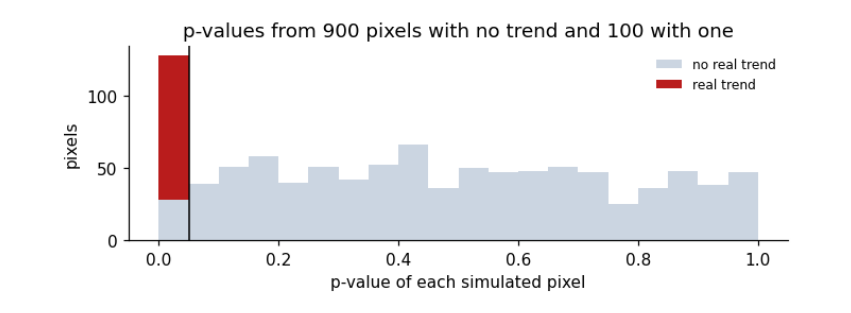

6. Many tests, and how to report them¶
6.1 Many tests at once: false discoveries¶
Thinking it through. What do we want to measure? Which pixels of a map really changed. What kind of data? One p-value per pixel, thousands of them. How do such data behave? Where nothing changed, p-values are spread evenly from 0 to 1, so 5 % of them fall below 0.05 by chance. Which method, and why? Benjamini–Hochberg, which controls the share of false findings among those reported: the right target for a map, where a few false pixels are tolerable but a map made mostly of them is not.
When a map is made by testing every pixel, some pixels will be "significant" by chance. With α = 0.05, about 5% of pixels with no real change pass the test. The Benjamini–Hochberg procedure controls the false discovery rate (FDR): among the results called significant, the expected share that are false is kept below a chosen q (say 5%). Simulation: 1,000 pixels, of which 900 have no trend and 100 a real one.
n_null, n_real, years = 900, 100, np.arange(30)
pvals, truth = [], []
for i in range(n_null + n_real):
slope = 0.0 if i < n_null else 0.04
y = slope * years + rng.normal(0, 0.3, len(years))
pvals.append(stats.linregress(years, y).pvalue); truth.append(i >= n_null)
pvals, truth = np.array(pvals), np.array(truth)
raw = pvals < 0.05
bh = stats.false_discovery_control(pvals, method="bh") < 0.05
fig, ax = plt.subplots(figsize=(6.5, 2.6))
ax.hist([pvals[~truth], pvals[truth]], bins=20, range=(0, 1), stacked=True, color=["#cbd5e1", "#b91c1c"], label=["no real trend", "real trend"])
ax.axvline(0.05, color="k", lw=1)
ax.set(xlabel="p-value of each simulated pixel", ylabel="pixels", title="p-values from 900 pixels with no trend and 100 with one")
ax.legend(frameon=False, fontsize=8); plt.tight_layout(); plt.show()
for name, call in [("p < 0.05 for each pixel", raw), ("Benjamini-Hochberg, q = 0.05", bh)]:
tp, fp = (call & truth).sum(), (call & ~truth).sum()
print(f"{name:30s} called significant {call.sum():4d}: real {tp:3d}, false {fp:3d}, share false {fp / max(call.sum(), 1):.0%}")

p < 0.05 for each pixel called significant 128: real 100, false 28, share false 22%
Benjamini-Hochberg, q = 0.05 called significant 105: real 100, false 5, share false 5%
How to read the figure. Each bar counts pixels whose p-value fell in that range. Pixels with no real trend (grey) spread evenly from 0 to 1: under H₀ every p-value is equally likely, so about 5% of them land below 0.05 by chance. Pixels with a real trend (red) pile up near 0. The black line is the usual 0.05 cut-off: everything to its left is called significant, including the grey sliver.
What the result says. Testing each pixel at 0.05 calls 28 no-change pixels significant, so more than a fifth of the "changes" are false. Benjamini–Hochberg keeps the share of false discoveries near 5%. Here it still finds all 100 real trends because they are strong; with weaker real effects it would miss some, which is the price of controlling false discoveries. On a real map with millions of pixels, this is the difference between a map of change and a map of noise.
6.2 Reading any test result¶
Every test reported in a paper should come with the same set of facts. This table collects the ones used above.
summary = pd.DataFrame([
["z-test", "Is one value unusual?", "a value, a mean, a known SD", "z = (x − μ)/σ", "none", "unitless (number of SDs)"],
["t-test for a slope", "Is there a trend?", "pairs (time, value)", "t = b / SE(b)", "n − 2 (fewer if autocorrelated)", "b in units of y per unit time"],
["Welch t-test", "Do two means differ?", "two samples", "t = (x̄₁ − x̄₂)/√(s₁²/n₁ + s₂²/n₂)", "Welch–Satterthwaite", "difference in units of y"],
["Mann–Whitney U", "Does one group tend to be larger?", "two samples", "U from ranks", "none", "U is a count of pairs"],
["Pearson r test", "Are two variables linearly related?", "pairs (x, y)", "t = r√(n−2)/√(1−r²)", "n − 2", "r unitless, −1 to 1"],
["Mann–Kendall", "Is there a monotonic trend?", "a time series", "Kendall τ of value with time", "none", "τ unitless, −1 to 1"],
["Chi-square", "Are two categories related?", "a table of counts", "χ² = Σ(O − E)²/E", "(rows − 1)(cols − 1)", "χ² unitless; Cramér's V 0 to 1"],
["Benjamini–Hochberg", "Which of many tests to believe?", "many p-values", "ranked p ≤ (k/m)·q", "none", "adjusted p-values"],
], columns=["test", "question", "inputs", "statistic", "degrees of freedom", "units"])
print(summary.to_string(index=False))
test question inputs statistic degrees of freedom units
z-test Is one value unusual? a value, a mean, a known SD z = (x − μ)/σ none unitless (number of SDs)
t-test for a slope Is there a trend? pairs (time, value) t = b / SE(b) n − 2 (fewer if autocorrelated) b in units of y per unit time
Welch t-test Do two means differ? two samples t = (x̄₁ − x̄₂)/√(s₁²/n₁ + s₂²/n₂) Welch–Satterthwaite difference in units of y
Mann–Whitney U Does one group tend to be larger? two samples U from ranks none U is a count of pairs
Pearson r test Are two variables linearly related? pairs (x, y) t = r√(n−2)/√(1−r²) n − 2 r unitless, −1 to 1
Mann–Kendall Is there a monotonic trend? a time series Kendall τ of value with time none τ unitless, −1 to 1
Chi-square Are two categories related? a table of counts χ² = Σ(O − E)²/E (rows − 1)(cols − 1) χ² unitless; Cramér's V 0 to 1
Benjamini–Hochberg Which of many tests to believe? many p-values ranked p ≤ (k/m)·q none adjusted p-values
6.3 A checklist for reporting a test¶
-
The question and the null hypothesis, in words.
-
The data: what, where, when, how many observations, and how many of them are independent.
-
The test, and why its assumptions hold, or how they were relaxed.
-
The statistic with its degrees of freedom, for example \(t(25.0) = 13.3\).
-
The p-value as a number, not only “\(p<0.05\)”.
-
An effect size and a confidence interval, in the units of the data.
-
If many tests were run, how false discoveries were controlled.
-
What the result means for the question, and what it does not show.